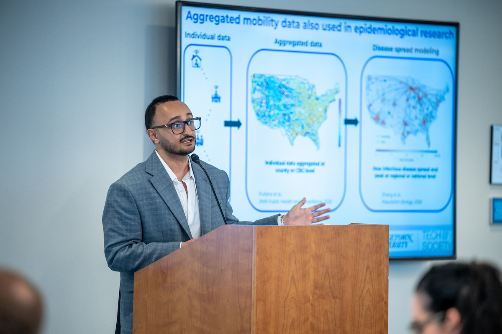

Data, Privacy, Technology & Public Policy
I work at the intersection of data science, privacy-enhancing technologies, digital governance, and public policy.

I am currently pursuing an MS in Data Science for Public Policy at Georgetown University. My academic and research work focuses on applied data science, privacy-preserving methods, and public policy analysis.
Previously, I completed a Master of Public Policy at the National University of Singapore and my undergraduate degree at Lahore University of Management Sciences. I have worked with organizations including PILDAT, the UK Foreign, Commonwealth & Development Office, the Asian Development Bank, and the Asia Internet Coalition.
Ongoing research examining the trade-offs between privacy protection and public health utility in mobility networks using differential privacy, membership inference attacks, and infectious disease modeling.
This project demonstrates privacy risks in non-private Latent Dirichlet Allocation and implements a simplified differentially private algorithm by injecting Laplace noise into a Collapsed Gibbs Sampling variant of LDA.
A music recommendation application built using clustering and dimensionality reduction techniques, leveraging Spotify audio features to generate personalized recommendations.
Feel free to reach out for collaborations, research discussions, or related opportunities.